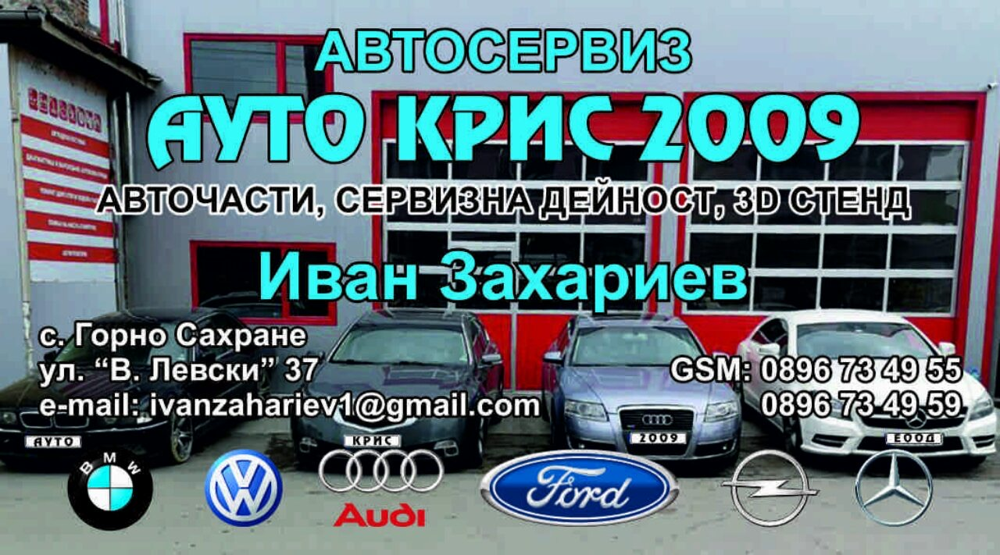

Кои сме ние ?
Сервиз Ауто Крис е професионален и регистриран авто сервиз за коли. Оперира на територията на община Павел Баня и се намира в село Горно Сахране. Сервиза предлага широк набор от услуги и ремонтни дейности по всяка част от вашия автомобил, както и обратна връзка за клиента, по всяко време на работния ден.
Какво предлагаме ?
Висококачествено обслужване и отношение към вас и вашия автомобил, така че да се чувствате сигурни и спокойни, че ще го намерите поправен, работещ, и в облика в който сте го оставили.
Основни ремонти
- Двигател
- Ходова част
- 3D Стенд
- Смяна на масла и филтри
- Други
Ел. ремонти
- Окабеляване
- Букси
- Акомулатори
- Други
Диагностика
- Автодиагностика
- Изчистване на грешки
- Диагностика на автоклиматици
- Зареждане на автоклиматици
- Други
Ние обслужваме всякакъв вид леки автомобили, без значение от марката.
Ако не желаете да подменим частите ви с нови, поръчани от нас, то може да донесете ваши с които да работим, но без гаранция за дадената част.
Предлагаме и доставка на поръчани от вас части.
Защо да изберете нас ?
Защото сме професионалисти, предлагаме ниски цени за региона и разполагаме с най-новото и качествено оборудване.
В сервиза има канали и подемници за работа по няколко коли едновременно. Разполагаме с 3D стенд, различни софтуери за автодиагностика, машина за смяна на маслото, преса, компресор, стойка за смяна на амортисьори, подвижни крикове, стойка за двигател, ултразвук, машина за климатици и много други.
В нашия автосервиз няма да попаднете на некоректно или грубо отношение, защото всеки клиент е важен за нас!